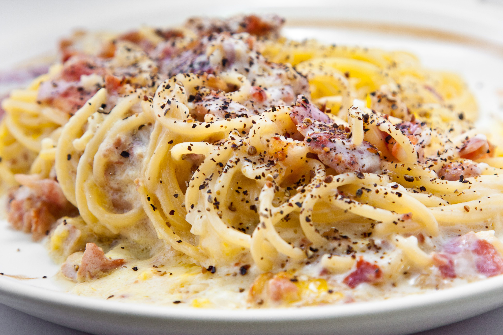

Aussie Carbonara Bitchesss
This is the BEST way to make carbonara you absolute tosser.
Follow these steps gimp boy and you will taste a slice of heaven.
Ingredient List
- CREAM
- parmesan
- panchetta
- eggs
- spaghetti
- garlic
- etc...
Method
- Fill large saucepan with water until it boils
- Finely chop panchetta etc...
- Add ...
- CREAMMMM
